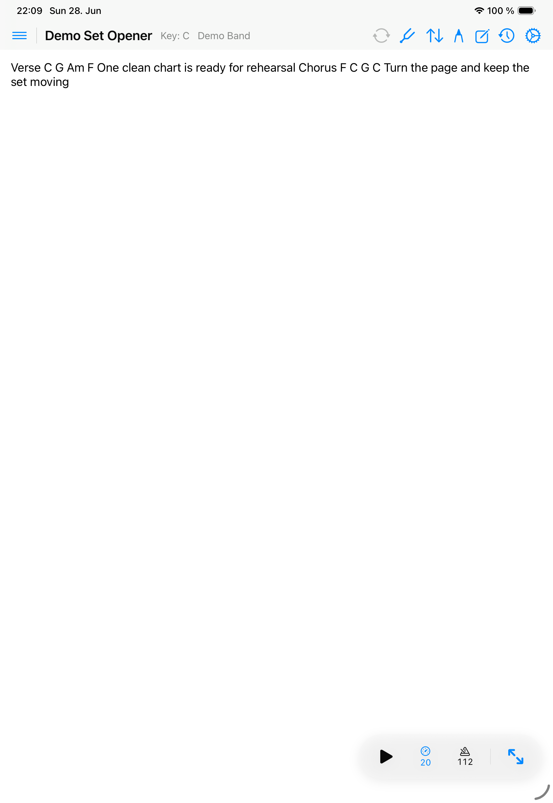

Markups
Annotations
Annotations let you mark charts without changing the underlying song content.

Draw on a song
- Open a ChordPro or PDF song.
- Turn on annotation mode.
- Use Apple Pencil or touch to draw, highlight, or erase.
- Leave annotation mode before using performance gestures again.
How annotations are saved
- PDF annotations are saved with the PDF song context.
- ChordPro annotations scale as the content size changes.
- Band-song annotations stay private per user even when the song itself is shared.
Clear annotations
Use the clear action only when you want to remove saved marks for the active song. This affects the current annotation context, not every song in the library.